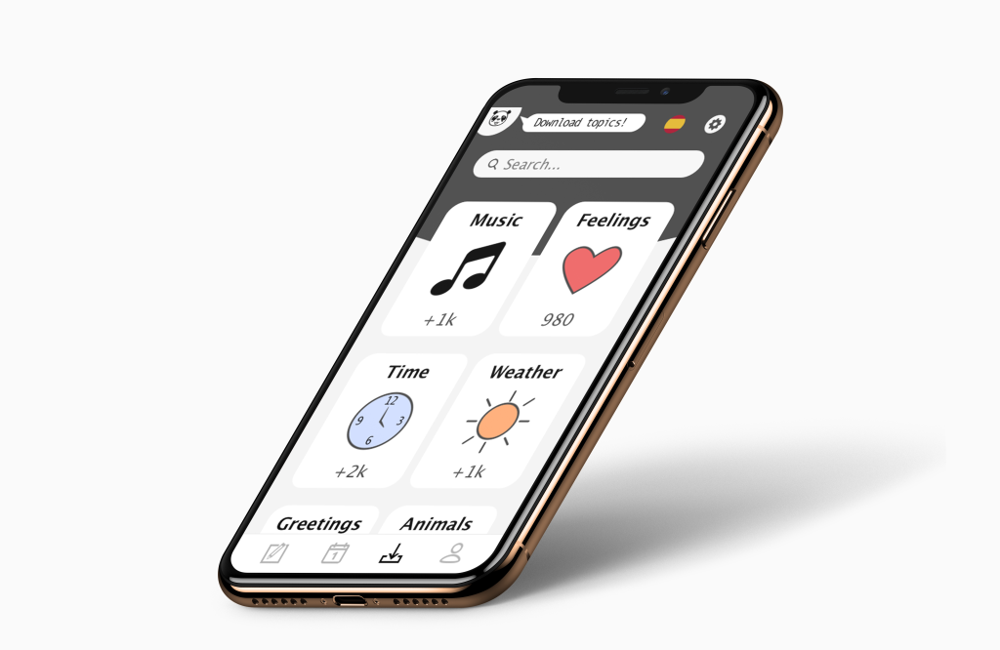
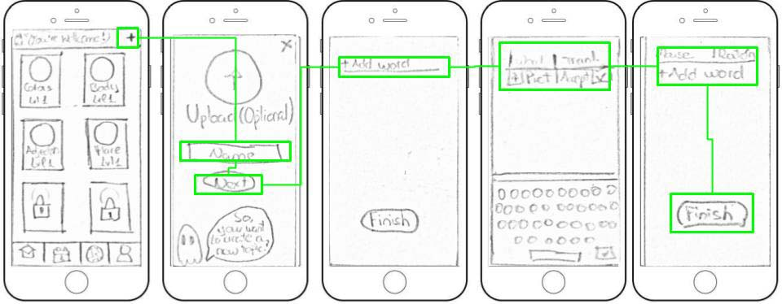

Along this project I aimed to create a unique experience for users wanting to learn the vocabulary they most like to.

'PocketWords' es una aplicación móvil de vocabulario divertida y divertida para todos los que quieran mejorar su vocabulario en otros idiomas a su propio ritmo y flujo. ¡Sin presión, solo adáptelo a sus propias necesidades!
Las personas, normalmente adolescentes y adultos jóvenes, carecen de tiempo suficiente para estudiar un nuevo idioma, pero tienen el deseo de hacerlo, y en concreto ven la necesidad de ampliar su vocabulario para poder expresarse mejor. De esta forma comence a desarrollar 'Pocket Words', una aplicación centrada en esta idea y para este público objetivo.
El objetivo de este proyecto era crear ejercicios breves de vocabulario para que todos puedan estudiar a su propio ritmo y, también la posibilidad de crear sus propias 'barajas' de vocabulario, para que puedan estudiar exactamente lo que quieren. Con esta idea también surgió la posibilidad de descargar y administrar mazos de otros usuarios, por lo que la aplicación fue más útil para todos.
Una vez analizado el objetivo de este proyecto, comencé mi investigación sobre la competencia para conocer más información sobre cómo otras compañías manejan este problema y qué se podría mejorar. Mi análisis fue centrado en diferentes puntos:

Las aplicaciones más importantes en el mercado que encontré fueron '+ Babble', 'Duolingo' y 'Learn Languages'. Me proporcionaron una idea de la estructura y el contenido más importante para los usuarios.
Fortalezas de los competidores: Alta variedad de contenido, buena estructura de navegación, seguimiento del progreso.
Debilidades de los competidores: No existe una forma de clara de buscar, no muestra siempre la respuesta correcta cuando fallas, solo un modo de aprendizaje.
Después de saber qué estaban haciendo los competidores y descubrir sus debilidades, me encaminé a traducir sus fallos en mis oportunidades para la aplicación. Busqué a algunas personas para realizar una entrevista y también hice algunas encuestas. Las preguntas y el estudio se centraron en conocer su rutina diaria, sus necesidades, objetivos y si alguna vez utilizaron una aplicación de vocabulario y por qué les gustó o no.
Teniendo en cuenta los resultados obtenidos de las entrevistas y encuestas, creé una lista de contenidos y características basadas en los objetivos de las personas. Después de enumerar todas las posibilidades, las clasifiqué y creé un primer intento en el mapa del sitio. Pero esto no fue todo, antes de finalizar la estructura de la app, también realicé un estudio cerrado de clasificación de tarjetas para saber cómo la gente cree que la aplicación se clasificaría mejor.

Para hacer la clasificación de la tarjeta, utilicé el sitio web Optimal Workshop. Algunas de las pruebas también se realizaron en persona utilizando este sitio web, por lo que después de la prueba, podría hacer algunas preguntas para comprender mejor cómo el evaluador racionalizó las respuestas.
Después de analizar los resultados de diez participantes, actualicé el mapa del sitio y este es el resultado final.
Cuando tuve claro cuántas pantallas iba a tener la aplicación y cómo estaban conectadas entre sí, comencé a dibujar todas una a una bocetandolas.
Dibujarlas ayudó a trabajar rápidamente y considerar más ideas, pudiendo probarlas rápidamente sin enfocarme en los detalles.

Después de revisar estas ideas, decidí crear un flujo de usuarios para cada una de las características principales de la aplicación y crear estructuras más detalladas para ellas.
Uno de ellos fue crear un nuevo tema con nuevas palabras y este es el flujo de usuarios para esto:
En base a mis bocetos iniciales y correcciones, creé wireframes de fidelidad media para la aplicación, para desarrollarlos con mayor profundidad y comprobar si todo funcionó correctamente teniendo en cuenta elementos como el espaciado, los patrones, la tipografía...

Antes de continuar, creé un prototipo simple para probar por mí misma cuán intuitiva era la aplicación y, después de eso, realicé algunas pruebas de usabilidad con 6 personas de mi objetivo de audiencia. Les pedí a los evaluadores que hicieran 3 acciones diferentes desde las características principales. Durante la prueba, observé las acciones de los usuarios y les pedí que pensaran en voz alta tanto como fuera posible, para poder tomar notas sobre todo lo que notan, las cosas buenas y malas.
Uno de los problemas que surgieron durante las pruebas fue que las personas no sabían cómo llegar a una prueba o revisar palabras, ya que todas estas opciones estaban ocultas juntas en un botón de opción en la pantalla del modo de estudio. Para resolver este problema, eliminé ese botón y lo agregué a la pantalla 'tema de selección', pero después de algunos intentos, me di cuenta de que en vez de eliminarlo fuera accesible desde ambos sitios y así los usuarios puedan acceder a esas opciones incluso cuando están en otro modo. Ahora, este proceso es mucho más rápido y fácil de entender. Además, actualicé el mapa del sitio debido a los cambios realizados.

Continué haciendo más pruebas y actualizando la aplicación, hasta que obtuve un diseño pulido.

El proyecto final resultó en un "juego" para móvil con el que aprender vocabulario general, e incluso crear tus propias listas de vocabulario, descargar listas de palabras de otros usuarios o usar los temas proporcionados por la aplicación. El juego es simple, se le da una palabra (escrita y / o audio) y cuatro posibles soluciones. Otras veces tendrás que escribir una oración con las palabras dadas o seleccionar palabras coincidentes. El modo de estudio finaliza cuando completa 10 solicitudes con éxito.
El sistema de experiencia se implementó para mantener la actividad de los usuarios y hacer que quieran volver a la aplicación y mejorar. Además, la posibilidad de desafiar a tus amigos o a un oponente aleatorio ofrece una experiencia más completa. Todavía hay otro método para garantizar que los usuarios vean su progreso, el sistema de logros, en el que podrán desbloquear 'trofeos' que cualquiera puede ver.
La aplicación tiene un panda llamado ‘Pocky’ como su mascota como una forma de acercarse a los usuarios y darle una personalidad a la aplicación. Pocky tendrá una manera amigable de hablar y alentará a los usuarios a mejorar a través de mensajes pequeños cuando la aplicación esté en una pantalla de carga o al final de un partido.

Al desarrollar este proyecto, me di cuenta de lo importante que es probar su diseño con usuarios potenciales y hacerlo varias veces. Pruebe, descubra soluciones, aplique y repita el proceso hasta que el proyecto parezca adecuado para todos.
Esos son los primeros borradores, los huesos de la apariencia, y, aunque están hechos para ser dibujados rápidamente, aún tiene que pensar mucho en ellos y descubrir el estilo de estructura que tendrá la aplicación.
Este fue un proyecto muy agradable, que terminó, no como una simple aplicación de aprendizaje, sino también como un videojuego de aprendizaje de vocabulario para teléfonos móviles, lo que lo hace más atractivo para el público objetivo. También lo disfruté más, ya que tengo experiencia en videojuegos y había ciertas cosas que estaba acostumbrado a considerar al crear un juego..
Contact me to discuss about it. Surely I can help you accomplish your goals.